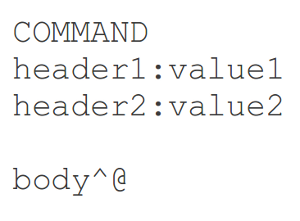
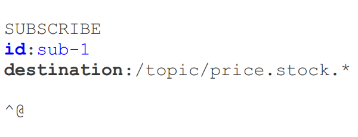
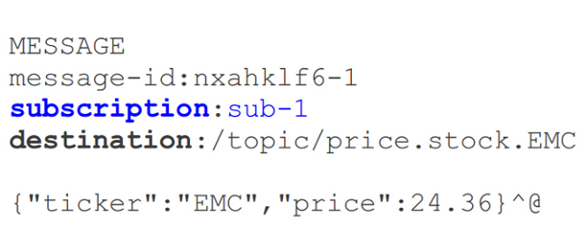

Java API for WebSocket
(JSR-356)
- Much debate on JSR expert group
- Convergance of pre-existing implementations
- Result:
All-new WebSocket implementations
Runtime Support
- Tomcat 8 (currently RC1)-
expect backport to Tomcat 7 soon - Jetty 9 has native WebSocket API-
Jetty 9.1 addsJSR-356 - Glassfish 4 w/ Tyrus WebSocket engine
- More to follow
Why JSR-356 Isn't Enough?
- No fallback options...
means no IE<10 + potential network issues - No sub-protocol support...
means hard to build real apps - No way to handle HTTP and WebSocket requests
from one place (i.e. "front controller" pattern) - Too low level--
need a framework or you'll end up building one
WebSocket API
Is Just Too Low Level
- Single WebSocket connection per client
- results in single
@ServerEndpointper application - limits you to one annotated class
- Not the right level of abstraction--
much like plain Servlet is too course-grained
Raw WebSocket
- A message is a blank page--
you can write anything (custom format anyone?) - Can't provide useful annotations--
what's the equivalent of@RequestMapping? - How do broadcast to some subset of users?
- No guarantees for message delivery
STOMP
STOMP Protocol
- Simple protocol for asynchronous message passing
- Originally for scripting languages (Ruby, Python)
- Supported by message brokers
- Suited for use on the web
- Frames modelled on HTTP
STOMP Frame Content

Client-to-Server Commands
SENDSUBSCRIBEUNSUBSCRIBE
Server-to-Client Commands
MESSAGEERRORRECEIPTACKNACK
The "Destination" Header
- A key concept in STOMP
- Opaque string, syntax left to server
- Typically URI path-like (
"/queue/a","/topic/a") - Message brokers define semantics
Client Produces a Message

Client Consumes a Message (1)

Client Consumes a Message (2)

STOMP in
Spring Framework 4
New module: spring-messaging
- Support for STOMP
- Message-handling annotations
- Key abstractions moved from Spring Integration
(Message,MessageChannel,MesageHandler, ...) - Foundation for WebSocket messaging architecture
Annotated Message Handling
@Controller
public class GreetingController {
// Receive client messages to destination "/greeting"
@MessageMapping("/greeting")
public void greet(String greeting) {
}
}Annotated Message Handling
@Controller
public class GreetingController {
// Receive client messages to destination "/greeting"
// Process + send to subscribers of "/topic/greetings"
@MessageMapping("/greeting")
@SendTo("/topic/greetings")
public String greet(String greeting) {
return "[" + getTimestamp() + "]: " + greeting;
}
}What Handles "/topic/greetings" Subscriptions?
- Simple, built-in message broker, or
- Full-featured, external STOMP broker-
RabbitMQ, ActiveMQ, etc
Configuration
@Configuration
@EnableWebSocketMessageBroker
public class Config implements WebSocketMessageBrokerConfigurer {
@Override
public void registerStompEndpoints(StompEndpointRegistry r) {
r.addEndpoint("/stomp"); // WebSocket URL prefix
}
@Override
public void configureMessageBroker(MessageBrokerConfigurer c) {
c.enableSimpleBroker("/topic/"); // destination prefix
c.setAnnotationMethodDestinationPrefixes("/app");
}
}Message Flow

Send Messages From Anywhere
@Controller
public class GreetingController {
@Autowired
private SimpMessagingTemplate template;
@RequestMapping(value="/greeting", method=POST)
public void greet(String greeting) {
String text = "[" + getTimeStamp() + "]:" + greeting;
this.template.convertAndSend("/topic/greeting", text);
}
}Responding to a Subscription
(Request-Reply Pattern)
@Controller
public class PortfolioController {
@SubscribeEvent("/positions")
public List<PortfolioPosition> getPositions(Principal user) {
Portfolio portfolio = ...
return portfolio.getPositions();
}
}Plugging In External
Message Broker
Reasons for Full-featured Broker
- Simple built-in broker supports subset of STOMP
(SUBSCRIBE,UNSUBSCRIBE,MESSAGE) - No acks, receipts, transactions
- Relies on simple message sending loop
- Not suitable for clustering
Message Flow: External Message Broker

Configuration
@Configuration
@EnableWebSocketMessageBroker
public class Config implements WebSocketMessageBrokerConfigurer {
@Override
public void configureMessageBroker(MessageBrokerConfigurer c) {
c.enableStompBrokerRelay("/queue/", "/topic/");
c.setAnnotationMethodDestinationPrefixes("/app");
}
// ...
}Using Full-featured Broker
- Check broker STOMP documentation page
- Understand destination semantics
- Any additional features
- Application is now backed by message broker